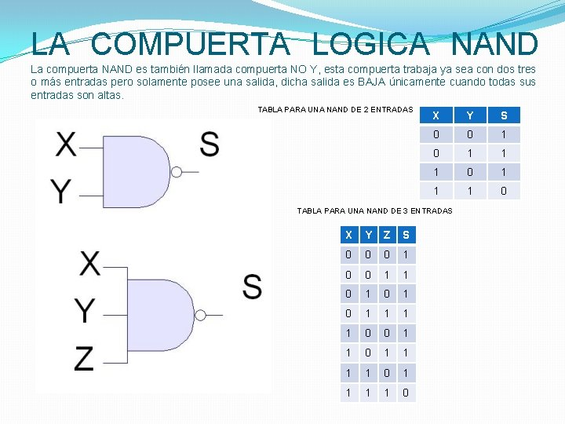

compuertas logicas
Las compuertas lógicas son configuraciones electrónicas, básicamente construidas por medio de transistores, pero que tienen como principal característica que se genera un valor de salida en respuesta a una operación booleana que se realiza con las entradas de la compuerta.
